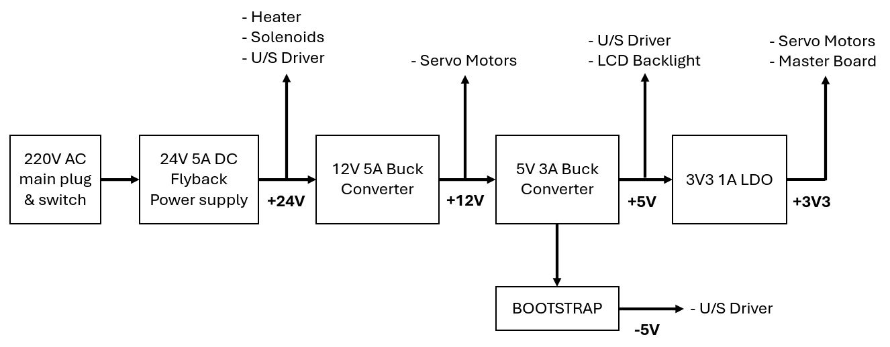

Power supply
Introduction
As the bonding machine requires is composed of many different subsystems (heater, motor, driver boards, etc.)
which operate at different supply voltages, we need to design a power supply unit (PSU) which can provide many
power rails in a similar fashion to an ATX supply for desktop computers.
Unfortunately, ATX PSUs are too big to fit in the electronics panel of our bonding machine and furthermore they
don't provide all the voltages we need. As you will see below, we decided to use a single rail AC/DC converter
with a cascade of buck converters to get all the voltages we need.
PSU in detail
Block scheme
The block scheme of our PSU can be seen in the image below.
As expected, the 24V rail is connected to the more
power hungry elements of the system, mainly the heater and the solenoids which require a lot of current to be
operated (2A for the first, around 0.5A each for the latter). The ultrasonic driver is less demanding in terms
of current, as it's turned on at full power for a few milliseconds at most (i.e. while "soldering" the bonding
wire onto the substrate) and it requires only around 100mA.
Motors operate at 12V. The Z and θ motors draw 2A at full power, while the X and Y motor draw 0.5A at full power.
It's important to notice that motors consume power even when they do not rotate because they actively hold the
their position: in electric motors, holding a position requires power because the magnetic field generated by
the coils in the rotor needs to be present at all times.
Fortunately, the motors consume far less than their maximum power when they are in hold (a few hundred mA at maximum depending on the static load).
A 5V rail is required to turn on the back light of the LCD, while a dual 5V rail is needed for the control
circuitry of the ultrasonic driver. The other control circuitry (MCU board and motor driver boards) require a 3.3V.
The current drawn in these rails is very low compared to the 12V and 24V rails.

Image gallery
- Left: power switch and power socket;
- Right: 24V flyback power supply.